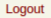

Seitenmenü¶
Das Seitenmenü ist Ihr permanenter Begleiter und dient zur Navigation innerhalb dieser Webapplikation.
Das Seitenmenü beinhaltet:
Ihr Name oder Ihre E-Mail¶
 Es wird Ihr Name oder Ihre E-Mailadresse angezeigt.
Es wird Ihr Name oder Ihre E-Mailadresse angezeigt.
Mit einem Klick auf Ihren Namen gelangen Sie zu Ihrem Benutzer/inprofil und können dort Änderungen der Angaben zu Ihrer Person vornehmen. Lesen Sie diesbezüglich weiter unter Persönliches Benutzer/innenprofil.
Suchfunktion¶
 Die Suchfunktion gibt Ihnen die Möglichkeit, nach Inhalten zu suchen. Geben Sie ein Schlagwort ein und klicken Sie dann auf die Lupe (oder drücken Sie die Eingabetaste). Es wird nach EK-Nummern, englischen Projekttiteln, deutschen Projekttiteln, Sponsor/innennamen, Einreicher/innennamen und EudraCT-Nummern durchsucht.
Die Suchfunktion gibt Ihnen die Möglichkeit, nach Inhalten zu suchen. Geben Sie ein Schlagwort ein und klicken Sie dann auf die Lupe (oder drücken Sie die Eingabetaste). Es wird nach EK-Nummern, englischen Projekttiteln, deutschen Projekttiteln, Sponsor/innennamen, Einreicher/innennamen und EudraCT-Nummern durchsucht.
Logout-Knopf¶
 Wenn Sie Ihre Arbeit mit dem ECS-System für diese Sitzung beenden wollen, klicken Sie auf den roten Logout-Schriftzug. Sie können sich jederzeit unter Angabe Ihrer E-Mailadresse und Ihres gewählten Passwortes erneut anmelden.
Hilfe-Knopf¶
Haben Sie Fragen zur aktuellen Seite, klicken Sie auf den Hilfe-Knopf. Dies öffnet die Hilfe-Seite in einem neuen Reiter.
Feedback-Knopf¶
Idee, Frage, Problem, Lob.
Klicken Sie auf den Feedback-Knopf und wählen Sie eine der Feedback-Optionen in der obersten Leiste. Geben Sie einen Titel ein und beschreiben Sie Ihr Feedback im Eingabefeld. Klicken Sie am Ende auf Abschicken. Klicken Sie dann auf den Knopf weiteres Feedback um wieder auf die Feedback-Übersicht zu gelangen.
Sobald Sie ein Feedback abgeschickt haben, erscheint es auf der rechten Seite des Popups wahlweise unter Idee/Frage/Problem/Lob anderer Benutzer. Hier können Sie auch in das Feedback anderer Benutzer/innen einsehen.
Notizblock-Knopf¶
Der Notizblock ist über den Notizblock-Knopf jederzeit verwendbar, ob für allgemeine Notizen oder für studienbezogene Vermerke. Es gibt daher einen allgemeinen Block und einen für jede Studie. Sie können auch von einem Notizblock auf einen anderen wechseln, indem Sie im geöffneten Popup auf den Link Zur Liste der Notizblöcke klicken und dort einen Block auswählen. Alle Notizblöcke sind privat, d.h. nur für Sie einsehbar; Notizen können auch nur von Ihnen gelöscht werden. Die Speicher-Funktion Speichern und schließen garantiert, dass Ihre Notizen gesichert sind.